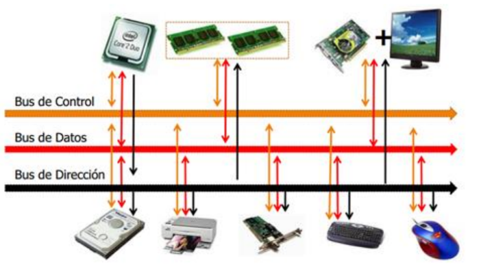
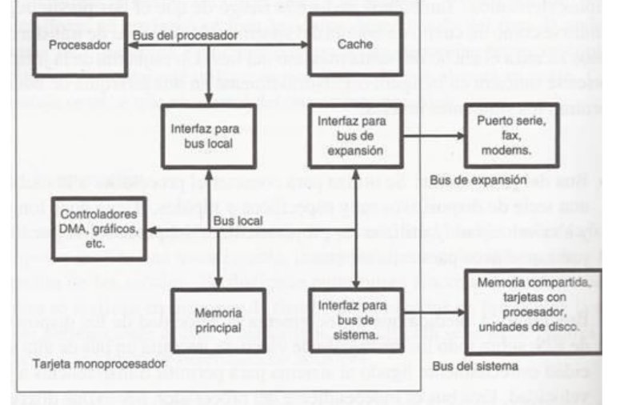
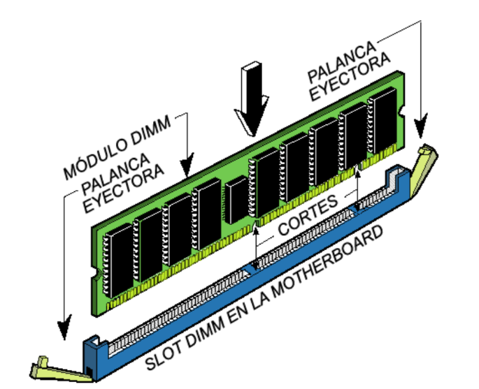
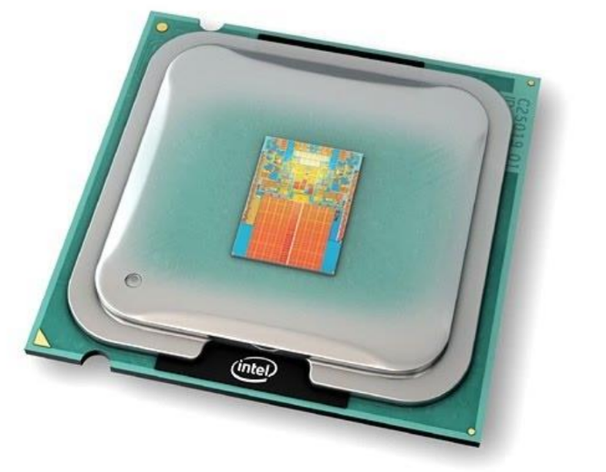
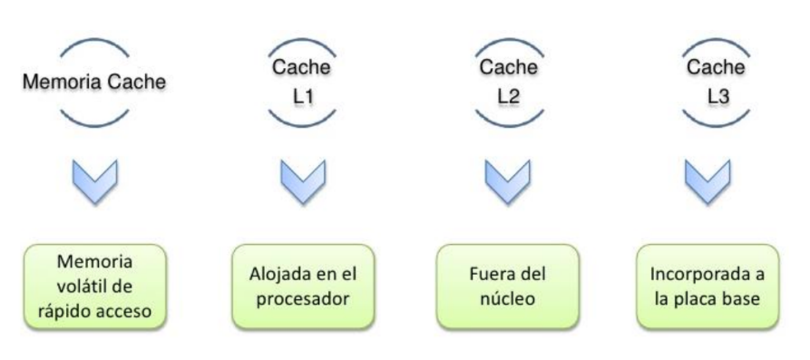
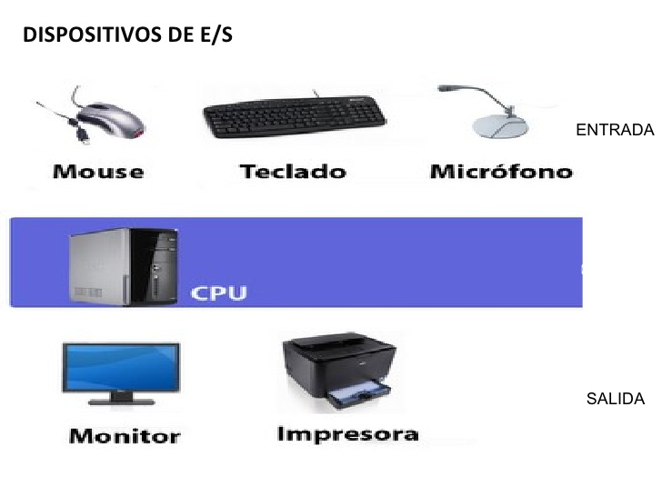

Existen dos tipos primordiales de buses (conexiones) para el envío de la información: bus paralelo o serial.
Hay diferencias en el desempeño y hasta hace unos años se consideraba que el uso apropiado dependía de la longitud física de la conexión: para cortas distancias el bus paralelo, para largas el serial.
Bus paralelo: Es un bus en el cual los datos son enviados por bytes al mismo tiempo, con la ayuda de varias líneas que tienen funciones fijas. La cantidad de datos enviada es bastante grande con una frecuencia moderada y es igual al ancho de los datos por la frecuencia de funcionamiento. En los computadores ha sido usado de manera intensiva, desde el bus del procesador, los buses de discos duros, tarjetas de expansión y de vídeo hasta las impresoras.
Bus serie: En este los datos son enviados, bit a bit y se reconstruyen por medio de registros o rutinas de software. Está formado por pocos conductores y su ancho de banda depende de la frecuencia. Es usado desde hace menos de 10 años en buses para discos duros, tarjetas de expansión y para el bus del procesador.
Buses del procesadror.
Bus de Direcciones:
Es unidireccional debido a que la información fluye es una solo sentido, del CPU a la memoria ó a los elementos de entrada y salida.
El CPU puede colocar niveles lógicos en las n líneas de dirección, con la cual se genera 2n posibles direcciones diferentes. Cada una de estas direcciones corresponde a una localidad de la memoria ó dispositivo de E / S.
El procesador envía un código de dirección a la memoria o a otro dispositivo externo. El tamaño o anchura del bus de direcciones está especificado por el número de hilos conductores o pines.
Bus de Datos: Es bidireccional, pues los datos pueden fluir hacia ó desde el CPU.Las terminales pueden ser entradas ó salidas, según la operación que se este realizando ( lectura ó escritura ).En todos los casos, las palabras de datos transmitidas tiene m bits de longitud debido a que el CPU maneja palabras de datos de m bits; del número de bits del bus de datos, depende la clasificación del procesador.En algunos procesadores, el bus de datos se usa para transmitir otra información además de los datos.Es compartido en el tiempo ó multiplexado. Transfieren datos o códigos de instrucción hacia el procesador o se envían hacia el exterior los resultados de las operaciones o cálculos.

Bus de Control:
Este conjunto de señales se usa para sincronizar las actividades y transacciones con los periféricos del sistema. Algunas de estas señales, como Lectura o Escritura R / W , son señales que el CPU envía para indicar que tipo de operación se espera en ese momento. Los periféricos también pueden remitir señales de control al CPU, como son INT, RESET, BUS RQ.
Las señales más importantes en el bus de control son las señales de cronómetro, que generan los intervalos de tiempo durante los cuales se realizan las operaciones. Este tipo de señales depende directamente del tipo del microprocesador.
El procesador para coordinar sus operaciones y para comunicarse con los dispositivos externos. El bus de control dispone de señales que permiten leer y escribir datos en memoria o realizar una operación de Entrada/Salida en el instante adecuado.
Tecnología de buses.
Un bus se puede definir como una línea de interconexión portadora de información, constituida por varios hilos conductores (en sentido físico) o varios canales (en sentido de la lógica), por cada una de las cuales se transporta un bit de información. El número de líneas que forman los buses (ancho del bus) es fundamental: Si un bus está compuesto por 16 líneas, podrá enviar 16 bits al mismo tiempo.
Los buses conectan toda la circuitería interna. Es decir, los distintos subsistemas del ordenador intercambian datos gracias a los buses. Podemos clasificar a los buses, según el criterio de su situación física:
Bus Interno: Este mueve datos entre los componentes internos del microprocesador.
Bus local: De alta velocidad que conecta el procesador a la caché, el controlador de la caché también puede acceder al bus del sistema, con esta implementación, la mayor parte de los datos a los que va a acceder el procesador, que están en la caché, serán entregados a una alta velocidad, otro punto a destacar de esta parte es que los accesos a memoria por parte de la caché no van a interrumpir el flujo de datos entre procesador y caché. También se ve la posibilidad de conectar un dispositivo de entrada salida al bus local.
Bus del sistema: En el está conectada la memoria y por debajo el bus de expansión, al cual se pueden conectar una
amplia diversidad de dispositivos, entre el bus del sistema y el bus de expansión se encuentra una interface, que entre las principales tareas está la de adaptar las velocidades de transmisión, por ejemplo para un dispositivo muy lento conectado al bus de expansión la interface podría acumular una cierta cantidad de datos y luego transmitirla a través del bus del sistema.

Bus de expansión, más lento conectado mediante otro adaptador.
Todas las partes del microprocesador están unidas mediante diversas líneas eléctricas. El conjunto de estas líneas se denominan bus interno del microprocesador. Por este bus interno circulan los datos (bus de datos), las señales de control (bus de control) o las direcciones de memoria (bus de direcciones). Cuando se habla de un microprocesador de 32 bits, el número de líneas del bus interno es de 32.
Bus Externo: Este se utiliza para comunicar el procesador y otras partes, como periféricos y memoria.
Buses ISA (Industry Standard Arquitecture).
Las primeras computadoras personales estaban equipadas con ranuras de 8 bits, que para la velocidad de aquellos procesadores eran suficiente. Actualmente son lentas para los procesadores que existen.
Buses EISA(Extended Industry Standard Arquitecture). Arquitectura estándar industrial extendida. Tiene características de la ISA en cuanto a su compatibilidad pero con la velocidad de MCA es decir, 32 bits.
Buses VESA(Video Electronic Standard Asociation). Son una extensión de ISA. Incluye toda la tecnología de EISA, funcionan al ritmo del procesador y permiten la transferencia de datos sin necesidad de que estos intervengan permitiendo procesos mucho más rápidos y dejando mayor tiempo libre al microprocesador central.
Buses PCI (Peripheral Component Interconect). Interconexión a componentes perimetrales. Es de características similares a VESA, pero se distingue porque la conexión del bus con el microprocesador se efectúa por intermedio de un chip adicional que simplifica y suprime las limitaciones de la conexión directa.
Bus AGP (Advanced Graphics Port).
Puerto Avanzado de Gráficos. Se trata de un nuevo sistema para conectar periféricos en la placa base de la computadora, bus por el que van datos del procesador a los periféricos.
CardBus y PC Card (comúnmente PCMCIA)
Buses multiplexados básicos
En las computadora, el microprocesador controla (y se comunica con) las memorias y los dispositivos de entrada/salida (E/S) a través de la estructura de bus interna. El bus está multiplexado de manera que cualquiera de los dispositivos que están conectados al mismo pueda enviar o recibir datos hacia o desde los otros dispositivos.
Señales del bus. Utilizando la técnica de control síncrono del bus, el microprocesador suele ser el encargado de generar todas las señales de temporización y control. Entonces, los otros dispositivos sincronizan sus operaciones con dichas señales de control y temporización. Con la técnica de control asíncrono del bus, las señales de control y temporización son generadas conjuntamente por un origen y destino.
Memoria.
Es un dispositivo que puede mantenerse en por lo menos dos estados estables por un cierto periodo de tiempo. Cada uno de estos estados estables puede utilizarse para representar un bit.
A un dispositivo con la capacidad de almacenar por lo menos un bit se le conoce como celda básica de memoria.
Un dispositivo de memoria completo se forma con varias celdas básicas y los circuitos asociados para poder leer y escribir dichas celdas básicas, agrupadas como localidades de memoria que permitan almacenar un grupo de N bits.
El número de bits que puede almacenar cada localidad de memoria es conocido como el ancho de palabra de la memoria. Coincide con el ancho del bus de datos.
Uno de los circuitos auxiliares que integran la memoria es el decodificador de direcciones. Su función es la de activar a las celdas básicas que van a ser leídas o escritas a partir de la dirección presente en el bus de direcciones. Tiene como
entradas las N líneas del bus de direcciones y 2N líneas de habilitación de localidad, cada una correspondiente a una combinación binaria distinta de los bits de direcciones.
Por lo tanto, el número de localidades de memoria disponibles en un dispositivo (T) se relaciona con el número de líneas de dirección N por T= 2N.
Conceptos básicos del manejo de la memoria.
Se produce bajo el control directo y continuo del programa que solicita la operación de E/S. tanto en la entrada y salida programada como con interrupciones, el procesador es responsable de extraer los datos de la memoria en una salida, y almacenar los datos en la memoria principal. El problema con la E/S es que el procesador tiene que esperar un tiempo considerable hasta que el modulo en cuestión esté preparado para recibir o transmitir datos.
Memoria principal Semiconductora.
La memoria del semiconductor utiliza en su arquitectura circuitos integrados basados en semiconductores para almacenar información.
Un chip de memoria de semiconductor puede contener millones de minúsculos transistores o condensadores. Existen memorias de semiconductor de ambos tipos: volátiles y no volátiles.
En las computadoras modernas, la memoria principal consiste casi exclusivamente en memoria de semiconductor volátil y dinámica, también conocida como memoria
dinámica de acceso aleatorio o más comúnmente RAM (Random Access Memory).

Con el cambio de siglo, ha habido un crecimiento constante en el uso de un nuevo tipo de memoria de semiconductor no volátil llamado memoria flash.
Dicho crecimiento se ha dado, principalmente en el campo de las memorias fuera de línea en computadoras principalmente de escritorio.
Las memorias de semiconductor no volátiles se están usando también como memorias secundarias en varios dispositivos
de electrónica avanzada y computadoras especializadas y no especializadas.
Memoria Caché.
Dentro de nuestro procesador no sólo se encuentran los componentes que hacen posible sus enormes capacidades de computación, también hay una pequeña memoria que se encarga de conseguir que el trabajo de nuestro procesador pueda realizarse a la velocidad que este opera.
Es la memoria de acceso rápido de una computadora, que guarda temporalmente las últimas informaciones procesadas. La memoria caché es un búfer especial de memoria que poseen las computadoras, que funciona de manera similar a la memoria principal, pero es de menor tamaño y de acceso más rápido. Es usada por el procesador para reducir el tiempo de acceso a datos ubicados en la memoria principal que se utilizan con más frecuencia.
La caché es una memoria que se sitúa entre la unidad central de procesamiento (CPU) y la memoria de acceso aleatorio (RAM) para acelerar el intercambio de datos. Cuando se accede por primera vez a un dato, se hace una copia en la caché; los accesos siguientes se realizan a dicha copia, haciendo que sea menor el tiempo de acceso medio al dato.
Cuando el procesador necesita leer o escribir en una ubicación en memoria principal, primero verifica si una
copia de los datos está en la memoria caché; si es así, el procesador de inmediato lee o escribe en la memoria caché, que es mucho más rápido que de la lectura o la escritura a la memoria principal.

Memoria caché nivel 1 ( L1).
También llamada memoria interna, se encuentra en el núcleo del procesador. Es utilizada para almacenar y acceder a datos e instrucciones importantes y de uso frecuente, agilizando los procesos al ser el nivel que ofrece un tiempo de respuesta menor. Se divide en dos subniveles:
Nivel 1 Data caché: se encarga de almacenar datos usados frecuentemente.
Nivel 1 Instruction caché: se encarga de almacenar instrucciones usadas frecuentemente.
Memoria caché nivel 2 (L2).
Se encarga de almacenar datos de uso frecuente, es mayor que la caché L1, pero a costa de ser más lenta, aun así es más rápida que la memoria principal (RAM).
Puede ser inclusiva y contener una copia del nivel 1 además de información extra, o exclusiva y que su contenido sea totalmente diferente de la cache L1, proporcionando así mayor capacidad total.

Memoria caché nivel 3 ( L3).
Es más rápida que la memoria principal (RAM), pero más lenta que L2, ayuda a que el sistema guarde gran cantidad de información agilizando las tareas del procesador.
En esta memoria se agiliza el acceso a datos e instrucciones que no fueron localizadas en L1 o L2.
Al igual que la L2, puede ser inclusiva y contener una copia de L2 además de información extra o, por el contrario, ser exclusiva y contener información totalmente diferente a la de los niveles anteriores, consiguiendo así una mayor capacidad total.
Entrada/Salida.
Organizacion de entrada/salida
La familia de procesadores 80x86, presente en el IBM PC, utiliza la arquitectura Von
Neumann, que puede verse en la figura 1. El denominado bus del sistema conecta las
diferentes partes de una maquina von Neumann, y en la familia 80x86 se diferencian 3 clases
de buses:
1. Bus de datos, de 8, 16, 32 o 64 bits dependiendo del modelo (64 bits para los Pentiums
de ultima generacion). El numero de bits se usa, en general, para determinar el tama˜no
(size) del procesador.
2. Bus de direcciones, para poder conectar la CPU con la memoria y con los dispositivos
de entrada/salida.
3. Bus de control, para enviar se˜nales que determinan como se comunica la CPU con el
resto del sistema (por ejemplo, las lıneas de lectura (read) y escritura (write) especifican
que es lo que se esta haciendo en la memoria).
CPU
Memoria
Dispositivos de Entrada/Salida
Figura 1: Arquitectura tıpica de una maquina Von Neumann
Por tanto, los dispositivos de entrada/salida son una de las partes fundamentales de la
arquitectura del computador y su objetivo es la eficiencia en la gestion de las operaciones de
entrada/salida, descargando a la CPU de tanto trabajo como sea posible. Estos dispositivos
tienen velocidades muy variadas:
1
Dispositivos lentos (como el raton, el teclado, el joystick. . . )
Dispositivos de velocidad media (como una impresora)
Dispositivos rapidos (como un disco duro, una tarjeta de red. . . )
Por tanto, un dispositivo concreto no puede aceptar datos enviados a una tasa arbitrariamente alta (por ejemplo, una impresora no puede imprimir los millones de caracteres por
segundo que serıa capaz de enviarle un Pentium IV). Por ello, ha de haber alguna forma de
coordinar el envıo de datos entre la CPU y los perifericos. Esa es la mision de los circuitos de
interfaz.
Existen 2 formas basicas de conectar estos circuitos de interfaz, dependiendo del tipo de
procesador en que se base la arquitectura. Ambos tipos de acceso requieren que la CPU realice
el movimiento de los datos entre el periferico y la memoria principal:
1. Conexion mapeada en memoria (memory–mapped I/O), que usa “direcciones especiales” en el espacio normal de direcciones. En este caso el circuito de interfaz se conecta
en el computador como si fuera memoria. Presentan este tipo de entrada/salida, por
ejemplo, aquellas arquitecturas basadas en el M68000 de Motorola. Cualquier instruccion que acceda a la memoria (como “mov”) puede acceder a un puerto I/O mapeado
en memoria.
2. Conexion mediante puertos especiales de entrada/salida (I/O–mapped I/O),
que usa “instrucciones especiales” de entrada/salida 1 y un espacio de direcciones especıfico. Este es el caso de las CPUs 80x86, y por tanto el que nos interesa para este
proyecto.
La familia de procesadores 80x86 proporciona, por tanto, dos espacios de direcciones:
Para memoria
Para dispositivos de E/S
El bus de direcciones (address bus) varıa de tama˜no segun el procesador de la familia que se
emplee (puede ser de 20, 24 o 32 bits), pero para la entrada/salida es siempre de 16 bits.
Esto permite al microprocesador direccionar hasta 65536 diferentes localizaciones especiales
de entrada/salida, lo que es mas que suficiente para la mayorıa de los dispositivos, aunque
muchas veces un dispositivo requiera mas de una direccion de entrada/salida (por ejemplo,
en el caso del raton PS/2 veremos que habra que acceder a las direcciones 60h y 64h; en el
caso del puerto de juegos, suele ser la 201h). Hay 2 espacios de direcciones, pero un solo bus
de direcciones y son las lıneas de control las que deciden a que espacio estamos accediendo
en cada momento. De esta manera, el direccionamiento de entrada/salida (I/O addressing)
se comporta exactamente igual que el direccionamiento de memoria (memory addressing). La
memoria y los dispositivos I/O comparten el bus de datos y los 16 primeros bits del bus de
direcciones.
Resumiendo, existen dos consideraciones basicas que debemos hacer en el subsistema de
entrada/salida en un IBM PC:
1 La familia Intel 80x86 usa las instrucciones en ensamblador in y out para acceder a los puertos de
entrada/salida. Estas instrucciones funcionan igual que mov excepto por que ponen la direccion en el bus de
direcciones de entrada/salida en vez de en el bus de direcciones de memoria.
1. Las CPUs 80x86 requieren “instrucciones especiales” para acceder a los dispositivos de
entrada/salida.
2. No se pueden direccionar mas de 65536 direcciones de entrada/salida. Esto es un problema porque algunos dispositivos requieren mas direcciones, como por ejemplo una
tarjeta grafica VGA tıpica, que necesita mas de 128000. Afortunadamente, existen medios, utilizando la circuiterıa adecuada, para mapear en memoria esos dispositivos.
Unidad de
Control
ALU
Circuito de
Interfaz de CPU
Datos Programa
Memoria
Regs.
I/O
Dispositivo
de I/O
Líneas de control
Líneas de direcciones
Líneas de datos
Regs.
Un puerto I/O tiene una apariencia de celda de memoria para el computador, pero tiene
conexiones con el mundo exterior. Los puertos de entrada/salida se clasifican habitualmente
en tres tipos diferentes:
Puertos de solo lectura (read–only o input port)
Puertos de solo escritura (write–only o output port)
Puertos de lectura–escritura (read–write o input–output)
Bus de datos desde CPU
línea de control de escritura
línea de decodificación de direcciones
Write
Enable
Data Datos al exterior
Puerto de solo–escritura con un latch
Por regla general, los puertos de entrada/salida utilizan un latch como elemento de memoria. Por ejemplo, en el caso de un puerto de solo escritura el latch captura los datos escritos
en el por la CPU y los hace disponibles en un conjunto de cables externos a la CPU y al
sistema de memoria. En este tipo de puertos la CPU no puede leer el dato que ha escrito en
el latch ya que para que este funcione deben estar activas tanto la lınea de direcciones como
la de control, y en el caso de querer realizar una lectura la lınea “control de escritura” (write
control) no estarıa activa. La figura 3 muestra una posible implementacion de un puerto de
solo escritura con un latch.
Si el puerto es de lectura–escritura, la CPU puede comprobar que el dato se ha escrito
correctamente leyendo del puerto. Un puerto de entrada/salida se comportarıa como se describe en la figura 4 (la parte inferior de la figura corresponderıa a un puerto de solo lectura
(input port)). Los datos que se escriban en un puerto de solo lectura son ignorados por el
sistema.
línea de control de escritura
línea de decodificación de direcciones
línea de control de lectura
Puerto de lectura–escritura
Formas de realizar la entrada/salida
Ya hemos visto que para coordinar el envıo de datos entre la CPU y los dispositivos se
usan circuitos de interfaz especiales. Existen basicamente tres formas de realizar la gestion
de entrada/salida en un dispositivo, es decir, tres formas en que estos circuitos de interfaz
pueden operar:
1. Entrada/salida por encuesta (tambien llamada por consulta o programada, en ingles
“polling”).
2. Entrada/salida por interrupciones.
3. Entrada/salida por acceso directo a memoria.
Entrada/salida por consulta
El polling, utilizado en las primeras computadoras personales (como Apple II), consiste
en que la CPU sondea periodicamente al dispositivo para ver cual es su estado. Ese sondeo se
puede hacer, por ejemplo, leyendo de una direccion de entrada/salida correspondiente a uno
o varios registros de estado del dispositivo. Los bits de esos registros de estado nos diran cual
es la situacion concreta del dispositivo (por ejemplo, si se trata de una impresora, podemos
saber si esta lista para recibir nuevos caracteres; si se trata de un teclado, podemos saber si
el usuario ha presionado una tecla y el caracter aun no se ha leıdo, etc). Otras veces no hay
tal registro de estado, y simplemente se lee lo que haya en la direccion I/O desde programa,
decidiendo luego que hacer con el dato leıdo. Este es el caso, por ejemplo, de un joystick
analogico conectado al puerto de juegos del PC.
Esta forma de entrada/salida es sencilla, pero claramente ineficiente. Por ejemplo, si un
usuario tarda 10 segundos en mover el raton, se habran realizado miles de encuestas al dispositivo sin detectar un nuevo evento, con la consecuente perdida de tiempo para realizar
otras tareas en la CPU. Por otra parte, el ritmo de transferencia de datos esta limitado por
la velocidad de la CPU, ya que no podremos encuestar al dispositivo con una frecuencia arbitrariamente alta. Por tanto, esta forma de entrada/salida debe evitarse en lo posible. Sin
embargo, en algunas ocasiones no quedara otra opcion, ya que el dispositivo en cuestion no
genera interrupciones (como es el caso del joystick que veremos en este proyecto).
Entrada/Salida por interrupciones
En el caso de la entrada/salida por interrupciones, es el dispositivo quien establece el
momento en que se realiza la transferencia de los datos, avisando a la CPU de que ha ocurrido
un evento (por ejemplo, que el usuario haya presionado una tecla). En este punto, debemos
aclarar que en la familia 80x86 existen tres tipos de interrupciones, que a veces producen
confusion por la nomenclatura empleada en diversos textos:
1. Las traps o interrupciones software son interrupciones invocadas por el usuario desde
programa. En este caso, la CPU pasa a ejecutar el manejador de trap asociado (su
rutina de atencion a la interrupcion o ISR2
).

2. Las excepciones son traps generadas automaticamente en respuesta a alguna condicion
excepcional producida al intentar ejecutar una instruccion: division por cero, codigo de
operacion ilegal. . . Tambien en este caso se ejecuta la ISR asociada, decidiendo, en su
caso, que hacer con la situacion anomala.
3. Las interrupciones hardware, a las que llamaremos simplemente “interrupciones”, se
basan en un evento hardware externo a la CPU y no relacionado con la secuencia de
instrucciones que se este ejecutando en ese momento. Son las que un ingeniero electronico
mas intuitivamente relacionarıa con el termino “interrupcion”, y con las que vamos a
tratar en este proyecto.
Para cada tipo de interrupcion, por tanto, se puede instalar una rutina de atencion o
servicio de interrupcion. Cuando la CPU recibe notificacion de la interrupcion detiene el
programa en ejecucion, ejecuta la ISR (es decir, sirve al dispositivo haciendo que cese su
peticion de interrupcion (si es necesario, se accede al controlador de interrupciones para
hacer lo mismo)) y finalmente devuelve el control al programa, restaurando su estado anterior.
Por tanto, una condicion importante a cumplir es que una ISR debe preservar el estado del
ISR: Interrupt Service Routine. Procedimiento creado especıficamente para manejar una trap, excepcion
o interrupcion.
Procesador (el contenido de todos sus registros) para poder volver al estado anterior a la
llamada.
Existe una diferencia entre las interrupciones hardware y las demas: cuando se entra en
una ISR de una interrupcion hardware, el procesador 80x86 deshabilita posteriores interrupciones hardware poniendo a 0 el flag de interrupcion. Esto no ocurre con las traps ni con las
excepciones 3
. Por tanto, si queremos inhabilitar las interrupciones en medio de una ISR de
trap o excepcion, hay que hacerlo explıcitamente, con la instruccion “cli” en ensamblador o
con los medios que proporcione el sistema operativo. De la misma forma, para permitir nuevas
interrupciones hardware en medio de una ISR hardware, hay que usar una instruccion “sti”.
Las fuentes primarias de interrupcion en el PC son variadas:
timer chip del PC
Esquema de conexion de los PIC
En la tabla 1 pueden consultarse las fuentes de interrupcion mas frecuentes en el PC, junto
con su numero de interrupcion asociado. Todos estos dispositivos se conectan al controlador
programable de interrupciones o PIC (Programmable Interrupt Controller ) Intel 8259A, que
establece prioridad entre las interrupciones y se conecta con la CPU. Este controlador de
interrupciones (que se denomina genericamente “8259”) acepta interrupciones de hasta 8
dispositivos. Si cualquier dispositivo pide servicio, el 8259 se “conectara” con la CPU y le
pasara un vector de interrupcion programable. En un principio, el PC IBM original solo
soportaba ocho interrupciones diferentes ya que usaba un solo chip 8259. Mas tarde IBM (y
todos los fabricantes de PCs) a˜nadieron un segundo PIC en el PC/AT y posteriores maquinas.
De hecho, podrıan encadenarse hasta nueve chips del 8259 para soportar un total de 64
3Notese que el flag de interrupcion del 80x86 solo afecta a las interrupciones hardware, y no evita que haya
una trap o una excepcion.
dispositivos que generen interrupciones. Lo normal, sin embargo, es tener solamente dos, tal
como se muestra, y soportar un total de 15 interrupciones.
Entrada al 8259 INT 80x86 Dispositivo
IRQ 0 8 Chip temporizador del sistema (timer chip)
IRQ 1 9 Teclado
IRQ 2 0Ah Conexion con el PIC 2(IRQ’s 8–15)
IRQ 3 0Bh Puerto serie 2 (COM2/COM4)
IRQ 4 0Ch Puerto serie 1 (COM1/COM3)
IRQ 5 0Dh Puerto paralelo 2 en AT, reservado en sistemas PS/2
IRQ 6 0Eh Controladora de floppy
IRQ 7 0Fh Puerto paralelo 1
IRQ 8/0 70h Reloj de tiempo real
IRQ 9/1 71h Redireccion de la IRQ 2
IRQ 10/2 72h Reservado
IRQ 11/3 73h Reservado
IRQ 12/4 74h Reservado en AT, Raton PS/2 en sistemas PS/2
IRQ 13/5 75h Interrupcion de la FPU (Floating Point Unit)
IRQ 14/6 76h Controladora de disco duro
IRQ 15/7 77h Reservado
y el IRQ 7 la mas baja. Si tenemos una tarea que queremos que sea de maxima prioridad
(como por ejemplo el control de un reactor nuclear) seguramente usarıamos la interrupcion no
enmascarable (int 2), no conectada con el 8259, que no puede desactivarse mediante software
y es de mayor prioridad que cualquiera que venga del PIC. Esto es ası porque en realidad los
chips de la familia 80x86 presentan dos posibles entradas de interrupcion. La primera es la
interrupcion enmascarable, a la que se conecta el 8259, que como su nombre indica se puede
enmascarar o desenmascarar con las instrucciones cli y sti. La segunda es para la interrupcion
no enmascarable, que siempre esta activada por defecto.
Entrada/Salida por acceso directo a memoria (DMA)
Tanto los subsistemas de entrada/salida mapeada en memoria como los que usan puertos
de entrada/salida necesitan que sea la CPU la que realice la transferencia de los datos entre el
dispositivo y la memoria. Para algunos dispositivos de alta velocidad, esta forma de procesar
los datos puede resultar demasiado lenta. En el caso del DMA, el dispositivo puede operar
directamente sobre la memoria, siempre que la CPU le haya concedido el permiso para hacerlo.
De esta manera, solo se avisa a la CPU al comienzo o al final de una operacion sobre memoria
y se consigue una tasa de transferencia de datos superior a la de los otros metodos. Ademas
esto a menudo permite que las operaciones de entrada/salida se realicen en paralelo a otras
operaciones de la CPU, aumentando ası el rendimiento global del sistema. Sin embargo, notese
que no es posible que la CPU y el dispositivo utilicen a la vez el bus de direcciones y de datos,
por lo que el procesamiento paralelo se dara solo cuando la CPU este operando sobre datos
contenidos en una memoria cache.